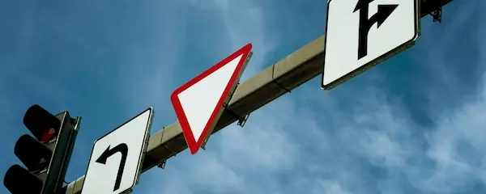
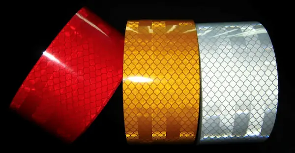
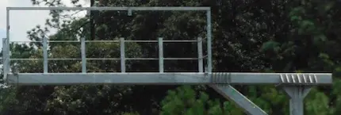
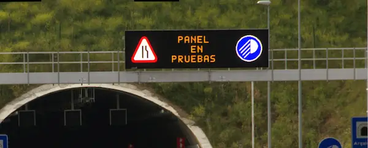
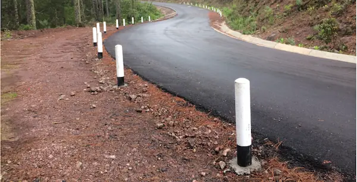

Señalamiento Bajo
Elaborado de acuerdo a los requerimientos de mayor exigencia, utilizamos señales preventivas, restrictivas, informativas y con los insumos de mayor calidad.
Preventivas - SP
Tienen como propósito advertir a los usuarios de las vías de riesgos y/o situaciones imprevistas de carácter permanente o temporal e indicarles su naturaleza.
Restrictivas - SR
Tiene por objetivo indicar al usuario, tanto en la zona rural como urbana, la existencia de limitaciones físicas o prohibiciones reglamentarias que regulan al tránsito.
Informativas de identificación - SII
Este tipo de señales ayudan a identificar las calles según su nombre, nomenclatura y las carreteras según su número de ruta y/o kilometraje.
Señalamiento Elevado - SID
Ayudan a informar a los usuarios sobre el nombre y la ubicación de cada uno de los destinos que se presentan a lo largo de su recorrido. El empleo de estas señales permite al conductor preparar la anticipación de su maniobra en la intersección, ejecutarla en el lugar debido y confirmar la correcta selección de su destino.
Informativas de Recomendación - SIR
Este tipo de señales tienen fines educativos para recordar a los usuarios determinadas disposiciones o recomendaciones de seguridad que conviene observar durante su recorrido por calles y carreteras.
Informativas de Información General - SIG
Se utilizan para proporcionar a los usuarios información general de caracter poblacional y geográfico, así como para indicar nombres de obras importantes en el camino, límites políticos, ubicación de casetas de cobro, puntos de inspección y sentido de circulación entre otras.
Informativas de Servicios Turísticos - SIS
Se utilizan para informar a los usarios la existencia de un servicio o un lugar de interés turístico y/o recreativo.
Señalamiento de Protección de Obras - DP
Son dispositivos de obra que se colocan dentro de una calle o carretera o en sus inmediaciones para protección, encauzamiento y prevención de conductores de vehículos y peatones.

Señalamiento Elevado
Comúnmente se utiliza para señales informativas de destino, con materiales óptimos para una máxima durabilidad, con tecnología producto de una larga experiencia en el sector de señalamientos y apegada a la normatividad. Nuestro proceso se realiza con el equipo más sofisticado. Estas señales van en forma de bandera, bandera doble y puente. SID12, SID 13, SID 14 Y SID 15
Señalamiento elevado banderas - SID
Este tipo de señales ayudan a informar a los usuarios sobre el nombre y la ubicación de cada uno de los destinos que se presentan a lo largo de su recorrido. El empleo de estas señales permite al conductor preparar la anticipación de su maniobra en la intersección, ejecutarla en el lugar debido y confirmar la correcta selección de su destino.
SID 13
Fabricado en lámina galvanizada calibre 16 y rotulado de acuerdo a las especificaciones SCT
SID 14
Bandera doble, fabricada en lámina galvanizada calibre 16 y rotulado de acuerdo a las especificaciones SCT.
SID 15
Bandera Puente, fabricada en lámina galvanizada calibre 16 y rotulado de acuerdo a las especificaciones SCT.

Reflejantes
Se utilizan para señales de control de tráfico. Existen distintos tipos: Película Reflejante Grado Diamante, Película Reflejante Alta Intensidad, Película Reflejante para Zona de Obra, Película Reflejante Fluorescente, Película Traslúcida de Corte Electrónico Electrocut, Película Premium Antigraffiti.
Rollo - R
Es una película prismática retro reflejante de alta eficiencia diseñada para la producción de señales que están expuestas verticalmente en servicio.
Tinta - T
La serigrafía es una técnica de impresión empleada en el método de reproducción de imágenes sobre cualquier material, y consiste en transferir una tinta a través de una malla tensada en un marco.
Papel - P
El papel transfer es un papel especial, provisto de dos capas, usado para transferir cualquier diseño o fotografía realizado a través de una impresoras.

Estructuras Metálicas
Contamos con los niveles de calidad de acero mas grande y con un importante departamento de ingeniería para los cálculos estructurales. Estos son perfiles de acero que sostienen las señales sobre los cuales descansan las estructuras que sostienen las señales elevadas e ITS en los sitios que indique el proyecto.
Estructura Metálica para Señalamiento
Son perfiles de acero que sostienen las señales bajas sobre los cuales descansan las estructuras que sostienen las señales elevadas, en los sitios que indique el proyecto.
Estructura Metálica para Dispositivos ITS
Son perfiles de acero que sostienen las señales VMS de Sistemas Inteligentes de Transporte
Postes para Señalamiento
Son productos fabricados y empleados para sostener el señalamiento vial
Estructuras a Medida
Diseñamos estructuras a medida de nuestros clientes.

Señal de Mensaje Variable (VMS)
Contamos con señales de mensaje variable las cuales sirven para informar, advertir y guiar a los automovilistas en carreteras, autopistas y zonas urbanas.
VMS con Panel Solar
VMS con Panel Solar

Indicadores de Alineamiento
Se usan para delinear la orilla de una carretera, en cambios del alineamiento horizontal, para marcar estrechamientos del arroyo vial y para señalar los extremos de muros de cabeza de alcantarillas. Son postes que delimitan la orilla exterior de los acotamientos, dispuesto de tal forma que al incidir en él la luz proveniente de los faros de los vehículos, se refleja hacia los ojos del conductor en forma de un haz luminoso.
PVC
Altamente flexible y resistente. Según requerimientos del cliente, puede incorporar reflejante alta intensidad.
Indicadores de Alineamiento Metálico
Son indicadores de alineamiento que se levantan a un costado de las carreteras, para mejorar la visibilidad de la misma en condiciones nocturnas, de lluvia, neblina, etc.
Indicadores de Alineamiento de Concreto
Fantasmas de concreto incluye: acero de refuerzo, pintura vinílica y reflejante se fabrica según especificaciones solicitadas de acuerdo al manual de SCT.